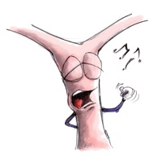
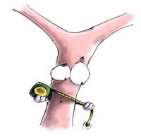

Retinal vessel analysis software for MATLAB
 
ARIA (Automated Retinal Image Analyzer) implements the vessel detection and diameter measurement algorithms described in:
In addition, it has been written in such a way as to allow the user-friendly adaption of parameters to other image types, or integration of alternative algorithms (or pieces of algorithms) related to retinal image analysis.
If you are a researcher and find a use for this software, please cite the paper above in any related publications. Also, if you are developer who would like to use ARIA as a basis for your own retinal image software, please consider forking this project and also cite the paper whenever it is used.
To run ARIA, simply open MATLAB and navigate so that the 'Current folder' is the one containing this README. Then type ARIA at the command prompt. Alternatively, right-click on the file ARIA.m and choose 'Run'.
If you want to be able to run ARIA without needing to navigate to the correct directory in MATLAB every time, type ARIA_setup once at the command prompt. The directories should then be saved.
To reproduce the results reported in the paper 'Fast retinal vessel detection and measurement using wavelets and edge location refinement', or to apply the timings using a different test system, you can simply run the file 'ARIA_run_tests.m'. Note that you will need to download the DRIVE (http://www.isi.uu.nl/Research/Databases/DRIVE/) and REVIEW (http://reviewdb.lincoln.ac.uk/) image databases first. The first time you run the tests, you will also need to select the directories in which these databases are saved.
Before trying the tests, you should ideally also run ARIA itself and open any suitable retinal image. This ensures that the software is set up properly, and also calls the analysis algorithm once - which makes the timing measurements more repeatable, because calling the code in MATLAB the first time tends to be much slower than any subsequent calls.
Relatedly, if you have the TIMEIT benchmarking function (by Steve Eddins, available at http://www.mathworks.com/matlabcentral/fileexchange/18798-timeit-benchmarking-function) either in this directory or elsewhere on the MATLAB search path, this will be used when testing the DRIVE segmentation times to get more robust results. It executes the code being profiled multiple times and reports the median as the time taken. This is particularly important when dealing with very short processing times.
For more information about running individual tests, type help ARIA_run_tests or explore the help information about the other .m files in the test directory. Where possible, a general function is used to implement the actual testing, and this could be used along with different algorithms or vessel processors to make similar comparisons.
Finally, to save the binary images resulting from segmentating the DRIVE database images only, use the function DRIVE_save_segmented_images('C:\drive_test') with 'C:\drive_test' replaced by the desired output directory.
Copyright © 2011 Peter Bankhead. See the file : Copyright.m for further details.
2011-12-09 - Initial version
2016-04-10 - Minor updates to for compatibility with more recent MATLAB versions